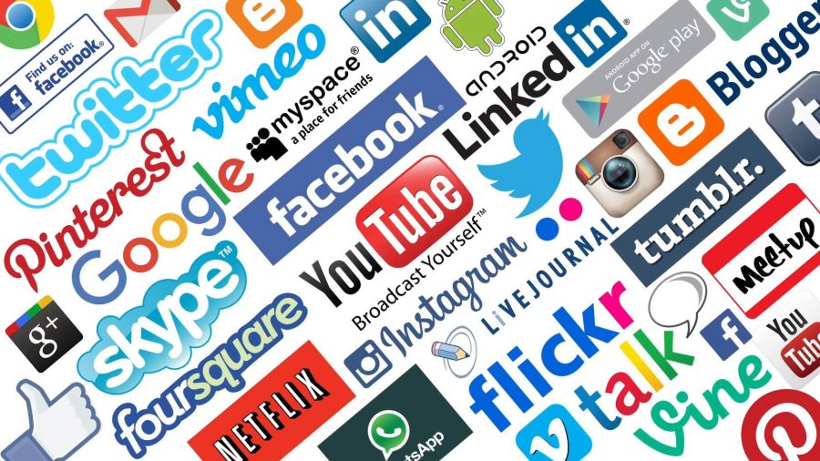

The overall rise in the use of SNSs (social networking services) regardless of age shows that the organization of the public online community is growing to be more people-focused than it was in the past. Today, the Internet is one of the most effective and efficient ways to communicate. Whether it is through Facebook, Myspace, Yahoo, or another website, the internet gives us the opportunity to connect with all kinds of different people and read news and information from all over the world.
Youtube was launched in February of 2005 by Chad Hurley, Steve Chen, and Jawed Karin. Users could upload, view, and comment on videos. In 2006 Google made a deal to buy Youtube which had by then become a rapidly growing online video website. It is the next step for Google and now Youtube has more than 110 million monthly viewers. Summer of 2009 Youtube announced the merge with Vevo music to launch music videos and in 2010 they started adding movie rentals with Netflix and apple.
Twitter was started in 2006 by Jack Dorsey, Even Williams and Biz Stone.It was an effort to find a new way to send texts from cellphones. On March 21 of 2006 the first tweet was sent which read “just setting up my twttr”.The dictionary definition of twitter is “to utter a succession of small, tremulous sounds, as a bird.The definition is largely represented of what happens on twitter. Twitter allows the user to share “tweets”, or posts of information. It has become extremely popular with businesses as it allows for fast news updates to its customers. Twitter has become one of the most popular social networking sites with over 500 million tweets per day and growing.Twitter recently introduced the Vine feature which allows users to tweet short video clips.
Pinterest was created by a man named Ben Silbermann in March of 2010.It is a social networking site and application that acts as a virtual pin board that links its user’s through common interests that are pinned to their virtual wall. The most popular use of Pinterest is to help plan weddings although it is used for other things that extend from animals to dinner recipes. Although it got off to a very slow start, by June of 2011 it had over 20 million users and today it has over 27 million users.
Instagram, a photo-sharing application, had over 10,000 users within hours of founders Kevin Systrom and Mike Krieger opening the app at the Apple App Store on October 6, 2010.The founders focused on building a mobile-only experience through Instagram that is about producing photos on the go, in the real world, in real time. This inspired a user’s creativity while they captured everyday moments through the Lens of the mobile phone.
Reddit was founded by University of Virginia roommates Steve Huffman and Alexis Ohanian, with Aaron Swartz, in 2005. Condé Nast Publications acquired the site in October 2006. It is an American social news aggregation, web content rating, and discussion website. Registered members submit content to the site such as links, text posts, images, and videos, which are then voted up or down by other members. Posts are organized by subject into user-created boards called "communities" or "subreddits", which cover topics such as news, politics, religion, science, movies, video games, music, books, sports, fitness, cooking, pets, and image-sharing. As of September 2021, Reddit ranks as the 19th-most-visited website in the world and 7th most-visited website in the U.S., according to Alexa Internet.